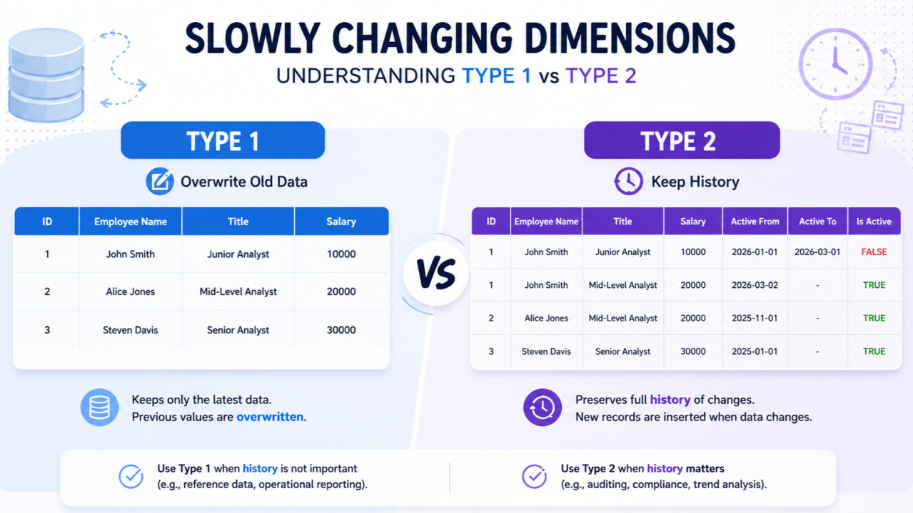
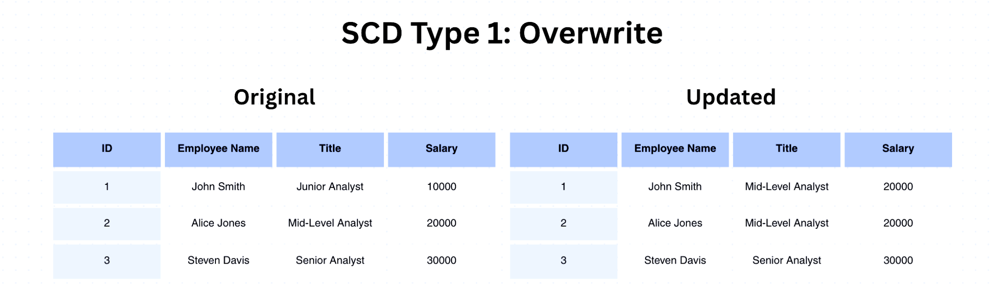
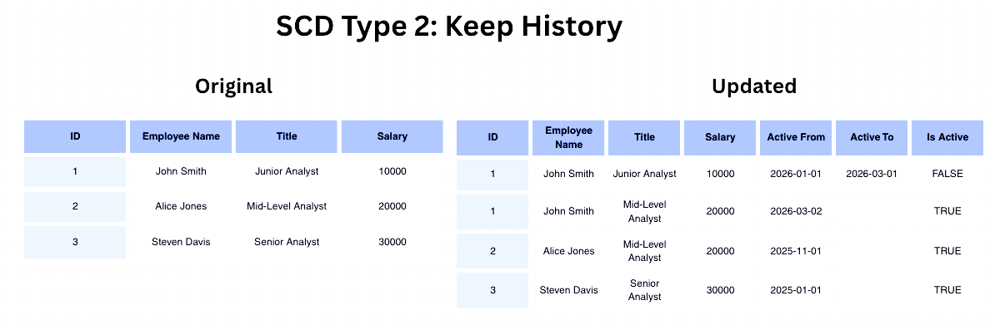

Slowly-Changing Dimensions: Design Your Data Warehouse for History

What are Slowly-Changing Dimensions (SCD)?
Dimensions are attributes that change over time. Think employee titles, customer addresses, or product names. The question isn't if they'll change, but how your data warehouse should handle those changes. Do you overwrite the old value, or keep the history?
SCD gives you a framework to answer that question. In this article, we'll walk through SCD Types 1 and 2, see them in action, and learn when to use each.
The Problem: Overwriting History
You manage the HR software for your company. On Friday afternoon at 4:59pm you're notified that an employee, John Smith, got promoted with a raise. You're diligent so you immediately update his job title and salary in the system. Done. Off by 5:00pm.
As your company thrives, this happens multiple times weekly for the next 6 months. Each time: You get notified, you update the system, off by 5:00.
Then a stakeholder emails at 4:59pm on a Friday:
URGENT: Need payroll cost changes over the previous 6 months.
You open the HR software. GULP. Why? Because every time you updated an employee's record, you overwrote the old values. There's no history. No audit trail. The old data is gone.
The Solution: SCD Type 2
Now flip the scenario. Your data warehouse was designed with SCD Type 2 in mind. Instead of overwriting John's old title and salary, the system stores both the old and new values with dates showing when each was active.
The stakeholder's urgent email arrives. This time, you pull the historical data in minutes and reply with the exact payroll cost changes. Problem solved. But how? Why?
How They Work: Type 1 vs Type 2
SCD Type 1: Overwrite
The screenshot below shows what happens with SCD Type 1. On the left, John Smith's record before the update. On the right, after.

John Smith's old title and salary have been overwritten.
Same number of rows. Same number of columns. The only change is John's new title and salary. The original values are overwritten and lost to history.
SCD Type 2: Keep History
The screenshot below shows the same update but with SCD Type 2.

John Smith's new title and salary have been written to a new row, retaining the historical records.
The key differences:
- Two rows for John Smith. One row contains his old title and salary. A second row contains his new title and salary.
- Three new columns. Active From (when the change took effect), Active To (when it ended), and Is Active (which row is current).
Now we have John's previous and current title and salary. Multiply this across multiple employees and multiple changes over time, and you can start answering real business questions: "How has compensation evolved across departments?" or "What's our promotion velocity by role?"
In practice, you'd track additional dimensions beyond title and salary such as department, location, or manager assignment. Each change gets recorded as a new row with its own validity dates. Type 2 transforms your dimension table from a snapshot into a historical record.
How to query this data
To get John's current title and salary, filter where Is Active = TRUE. This lets you easily answer point-in-time questions: "What was John's salary in March 2025?" Type 1 cannot do this. The data is simply gone.
When to Use Each Type?
The choice between Type 1 and Type 2 comes down to a simple question: Do you need to know what changed, or just what is?
Type 1: Overwrite
- Historical values don't matter (e.g., employee phone number changes—you only need the current number)
- Simplicity is a priority
- Storage is constrained
Type 2: Keep History
- You need audit trails (e.g., "What was John's salary in Q2 2025?")
- Dimension changes are business-critical to track (e.g., payroll reconciliation, compensation reviews)
- Compliance or regulatory requirements demand historical records
Type 2 is the safer default. The cost of storing extra rows is negligible compared to the cost of redesigning your warehouse later because stakeholders need historical data you didn't keep.
Choose Based on Your Needs
Simplicity vs History
SCD Type 1 and Type 2 represent two fundamentally different design philosophies. Type 1 prioritizes simplicity; Type 2 prioritizes history.
Pick a type based on what the business needs, not what's easier to build. A simple Type 1 design might feel like a win until stakeholders ask for historical analysis six months in. Then you're stuck.
Upfront Cost vs Headaches Later
Type 2 costs more upfront (extra columns, more rows, slightly more complex queries). But it's cheaper than redesigning your warehouse later because you didn't think about the questions people would ask.
The real skill is asking the right questions before you design: Will we ever need to answer "What was it?" If yes, build for Type 2. If you're certain the answer is no, Type 1 is fine.
These Aren't Your Only Options
Type 1 and Type 2 are the foundations, but there are others. Type 3, for example, keeps both the current and previous value in the same row (a middle ground between Type 1's simplicity and Type 2's history). It's useful when you only need to track the immediate change, not the full audit trail.
For a comprehensive look at all 8 SCD types and when to use each, see the Kimball Group's definitive guide.